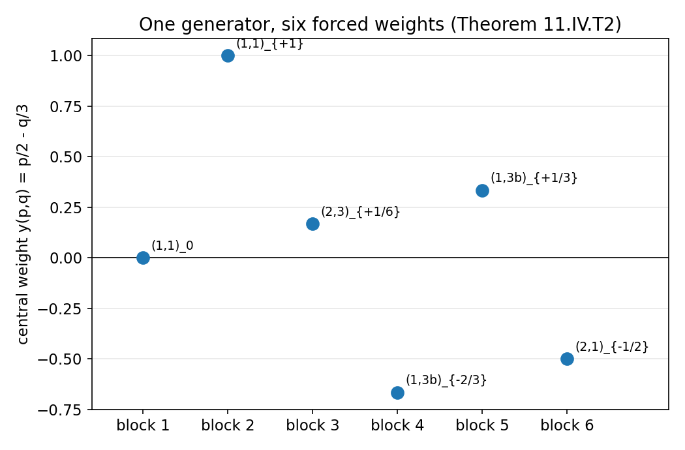
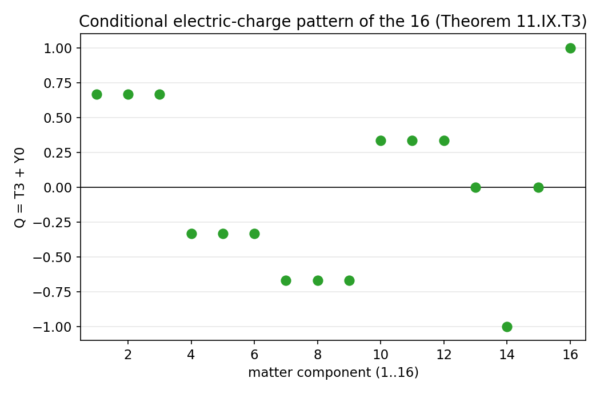
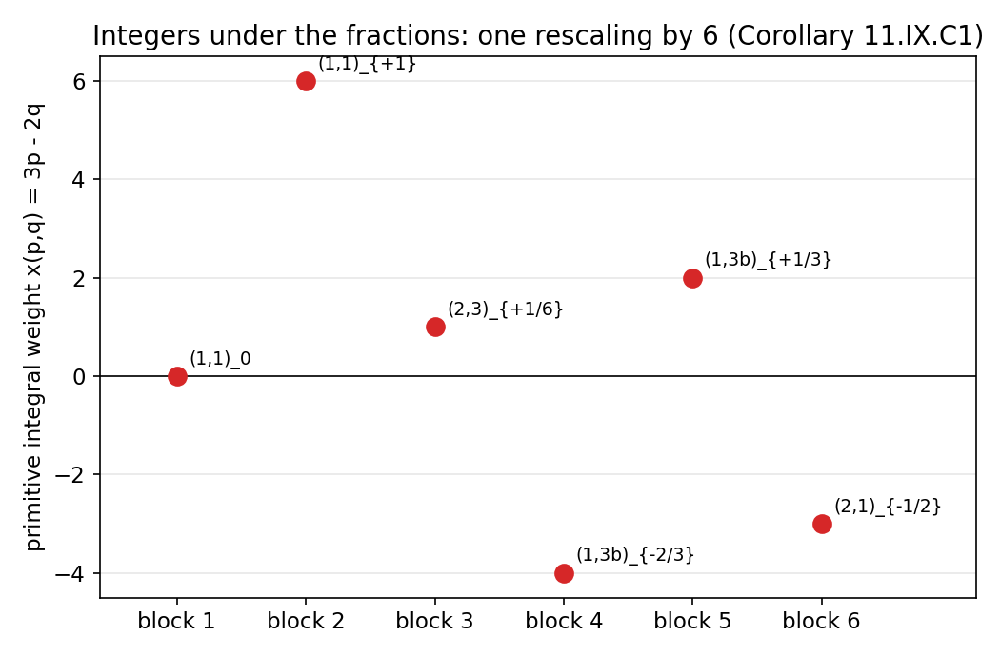
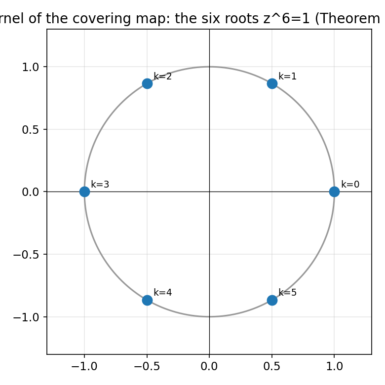
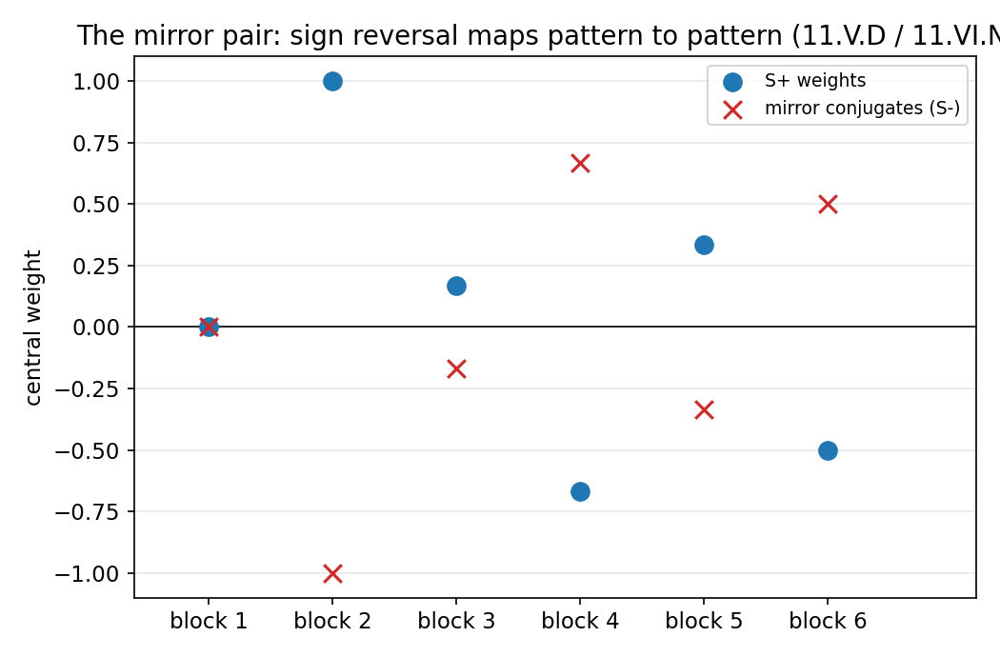

Book 11 — Particle Architecture and Standard Model Comparison
A restructured rewrite of Our Revised R Theory — Volume II, Book 11. Pictures first, then the audit.
About this rewrite. This is a restructuring of Book 11 (source lines 2497–4810 of
the Volume II full text, 2,314 lines, 11,232 words), not a new result. Every theorem,
ledger entry, and status label below comes from the original manuscript; no mathematics
has been added. What changed is the order of presentation:
Part I shows the mathematics — graphs first, intuition second, with each picture pointing
to the section that proves it. Part II runs the formal section-by-section audit. Part III states the dependency verdicts, the forward book map, and the dependency lock.
Intuition is labeled as intuition. Theorems are labeled as theorems. Every claim carries
exactly one scope tag:
CHECKED PROOFCOMPLETED SYMBOLIC CHECKCOMPLETED NUMERICAL CHECKSTANDARD IMPORTED THEOREMMANUSCRIPT ASSERTIONASSUMPTION OR AXIOMINCORRECT RESULTINCOMPLETE OR FAILED COMPUTATION.
A manuscript label is never promoted into a proved result.
Each graph below is a live Desmos calculator — drag, zoom, and trace it. If Desmos
can't load, a static image is shown instead, generated from the same formulas. Honesty note:
the live Desmos rendering was not verified in a live browser from this machine (no browser
available); the static PNGs are the verified artifacts, and every number plotted in them passed an
independent numerical check.
Figure 1. After the V−A projector is imported, the favored/wrong helicity-amplitude
odds of a massive fermion are exactly the canonical reciprocal pair: with
sin χ = β, cxp(χ) = e^η (blue, coincident with the
dashed √[(1+β)/(1−β)]) and crx(χ) = e^−η (green),
with cxp·crx = 1. Live in Desmos.
Watch the blue curve sit exactly on top of the dashed one: cxp(χ) = √[(1+β)/(1−β)] = e^η
is not a fit, it is an identity (max numerical error below 10⁻⁹ over the whole interval). The green
curve is its reciprocal, crx(χ) = e^−η. This is the historical T4 witness:
once the left-chiral projector is imported, the reciprocal pair becomes an exact coordinate for
helicity/chirality mixing. The import is doing the physical work; the identity is doing the bookkeeping.
STANDARD IMPORTED THEOREMFormal home: §11.PG.IX. The helicity-weight formula is standard Dirac spinor algebra (imported);
the cxp = e^η identity is a completed numerical check. Replacing
P_L by P_R exchanges favored and suppressed while leaving
the same reciprocal magnitude — the correspondence selects no handedness.
§2. One generator, six forced weights

Figure 2. The unique traceless central generator
Y₀ = i[(1/2)I₂ ⊕ (−1/3)I₃] assigns exactly one weight to each of the six
blocks of the half-spin module: 0, +1, +1/6, −2/3, +1/3, −1/2. No weight
was fitted; each follows from y(p,q) = p/2 − q/3. Live in Desmos.
Six dots, and none of them was chosen. The only inputs are the block sizes 2 and 3, the
traceless condition 2a + 3b = 0, and the rule that a scalar generator acts
additively on exterior products. Once you normalize a = 1/2, b = −1/3, every
fraction drops out: 1/6 is 1/2 − 1/3,
−2/3 is −2·(1/3), and so on. These are exactly the
familiar hypercharge numbers — but at this stage they are representation weights, not yet
physical hypercharge.
CHECKED PROOFFormal home: §11.IV.D, Theorem 11.IV.T2. Verified by exact fraction arithmetic (independent check).
The overall normalization and sign remain conventional until a physical U(1) contract is supplied.
§3. The charge pattern, all sixteen components

Figure 3. Under the conditional scalar-vacuum contract, the unbroken generator
Q = T₃ + Y₀ assigns exactly the standard electric charges to all sixteen
components: +2/3, −1/3, 0, −1, +1, … — including the conjugate charges of the
charge-conjugated singlets. Live in Desmos.
Sixteen dots, and the pattern is the one-generation electric-charge pattern you know. But notice what
didn't go in: no charge was inserted by hand. The only physical inputs are a doublet scalar and its
vacuum direction; the rest is the representation doing its own bookkeeping. This is the book's sharpest
conditional match — and it is still conditional.
COMPLETED SYMBOLIC CHECKFormal home: §11.IX.E, Theorem 11.IX.T3. Charge assignments verified by exact arithmetic.
Conditional on the comparison contract of §11.V and the scalar-vacuum contract of §11.IX.P1.
Physical identification remains conditional.
§4. Integers underneath the fractions

Figure 4. The global group — not just its Lie algebra — fixes the primitive integral
cocharacter X = i(3I₂ ⊕ −2I₃) (gcd(3,2) = 1). The six weights become integers
0, 6, 1, −4, 2, −3; the familiar fractions are this lattice divided by six,
since Y₀ = X/6. Live in Desmos.
The fractions in Figure 2 were never really fractions: they are integers on the primitive compact
central circle, viewed through the normalization Y₀ = X/6. The denominator
six is not a convention — it is tied to the 2+3 block structure by the global quotient. Up to an overall
sign, this lattice is forced.
Figure 5. Adding the six block contributions to the cubic U(1) anomaly one at a time:
1 + 1/36 − 8/9 + 1/9 − 1/4 + 0 = 0. No single weight was adjusted to make this
happen. Live in Desmos.
Follow the purple walk: it starts at 1, wanders, and lands exactly on zero. The same happens for
SU(3)³, SU(3)²U(1), SU(2)²U(1), and the mixed gravitational anomaly — all vanish for the weights forced
by the 2+3 exterior branching. The representation was not chosen by solving these equations; the
equations come out zero anyway. That is the nontrivial part. What it doesn't do: pick a chirality —
the mirror module's zeros are the same zeros.
COMPLETED SYMBOLIC CHECKFormal home: §11.VI.C–E, Theorems 11.VI.T2–T4. All five coefficients verified by exact fraction
arithmetic. Conditional on the imported standard chiral-QFT anomaly rules (§11.VI.P1) and the
left-handed-Weyl interpretation contract.
§6. The Z₆ kernel

Figure 6. The covering map
Φ(A,B,z) = (z³A, z⁻²B) identifies
S(U(2)×U(3)) ≅ [SU(2)×SU(3)×U(1)]/ℤ₆; its kernel is exactly the six roots
z⁶ = 1. Live in Desmos.
Six dots on the unit circle: the global form of the block group is the product modulo these six
identifications. This is the same global quotient the Standard Model gauge group is commonly written
with. Here it falls out of the 2+3 special block envelope — no fitting.
CHECKED PROOFFormal home: §11.III.B. Determinant condition and kernel verified numerically (200 random group
elements; all six roots checked as preimages).
§7. The mirror that won't break

Figure 7. The six-block weight pattern (blue) and its sign-reversed mirror (red ×).
Every test in the book — representation counts, anomaly cancellations, doublet parity — is blind to
which one you pick. Orientation correlation ≠ orientation selection. Live in Desmos.
This is the book's central negative result, drawn. The blue pattern and the red pattern pass every
consistency test the book runs: same block dimensions, same zero anomalies, same even doublet count.
No rule built from mirror-symmetric data can canonically prefer one. Something genuinely
mirror-sensitive — a parity-odd law, an oriented source, a vacuum-selection principle — would have to
be added. The book proves this obstruction rather than hiding it.
CHECKED PROOFFormal home: §11.I (chirality-selector theorems), §11.V.D, Negative Theorem 11.VI.N1.
The proofs are elementary symmetry arguments; their premises include manuscript-asserted data
(see Part II).
Part II — Then earn it
11.PG — Two-state internal gauge structure before chiral selection
11.PG.T1.UᵀJU = (det U)J for
U ∈ GL(2,ℂ); hence the J-preserving group is
SL(2,ℂ), and with the Hermitian form also preserved it is
SU(2). STANDARD IMPORTED THEOREM
(independently numerically checked, 2000 random matrices).
Corollary 11.PG.C1: the conditional SU(2) structure group. Status warning kept: preserving
J alone gives SL(2,ℂ), not SU(2),
and this is not an identification with the spacetime spin group.
11.PG.III.XᵀJ + JX = (tr X)J;
the infinitesimal algebra is X† = −X, tr X = 0, i.e. su(2),
real dimension 3, pseudoreal fundamental. STANDARD IMPORTED THEOREM
(identity numerically checked). Not a count of physical particles.
STANDARD IMPORTED THEOREM11.PG.IV: local SU(2)
connection transformation law, F = dA + A∧A, Bianchi identity.
CHECKED PROOFNegative Theorem 11.PG.N1: pure-gauge
A = −dUU⁻¹ gives F = 0 (Maurer–Cartan) — local basis
variation alone produces no force.
STANDARD IMPORTED THEOREM11.PG.V: non-Abelian curvature term.
MANUSCRIPT ASSERTION11.PG.VI: minimal Yang–Mills candidate
S_YM = −(1/2g²)∫tr(F∧∗F) within a stated candidate class; "candidate-class
uniqueness" is asserted, not proved here.
CHECKED PROOFNegative Theorem 11.PG.N2: no gauge-invariant bare
Proca mass term in the exact unbroken theory.
STANDARD IMPORTED THEOREM11.PG.VII:2⊗2 = 3⊕1,
Cartan weights 0, ±1 (adjoint) and ±1/2 (fundamental).
STANDARD IMPORTED THEOREM11.PG.VIII:U(2) ≅ (SU(2)×U(1))/ℤ₂ (surjectivity and kernel checked).
STANDARD IMPORTED THEOREM11.PG.IX: historical weak witness —
after importing Dirac structure and P_L, the reciprocal pair gives the exact
helicity odds; the cxp(χ) = e^η identity is a
COMPLETED NUMERICAL CHECK. No handedness selected.
11.PG.N3 — Chiral Representation Selection Obstruction.
No rule from left-right exchange-symmetric data can select the nontrivial SU(2) action on
S_L over S_R.
CHECKED PROOF (conditional on the manuscript's exchange-symmetry premise).
CHECKED PROOF11.PG.XII — Mirror-Automorphism Chirality No-Go:JŪJ⁻¹ = U for U ∈ SU(2) (numerically checked);
under mirror-invariant premises, every left-chiral assignment has an equally admissible right-chiral
mirror. Depends on a later Lorentz-spinor completion (Book 9's conditional reconstruction).
11.I — Chirality selector theorems
CHECKED PROOF11.I.A mirror exchange lemma;
11.I.B naturality no-go for intrinsic chirality selectors;
11.I.C axial-covariance obstruction (correlation ≠ selection);
MANUSCRIPT ASSERTION11.I.D rotational spin-connection corollary —
conditional on the imported T6 slow-rotation geometry;
STANDARD IMPORTED THEOREM11.I.E Einstein–Cartan sign erasure:
L_T,eff = −(β²/4α)K² is K → −K invariant;
CHECKED PROOF11.I.F spontaneous-breaking nonselection;
11.I.G the necessary chirality-selector certificate (a list of what a future derivation must
supply — a requirement, not a derivation).
11.II — The three-state internal block
MANUSCRIPT ASSERTION11.II.A supersession theorem: the earned
W_V ≅ ℂ³ replaces the historical "declare V₃ ≅ ℂ³".
The earning itself lives in Book 6 (see Part III dependency verdict).
STANDARD IMPORTED THEOREM11.II.B: determinant-one block isometries
give SU(3), dim_ℝ su(3) = 8;
11.II.C:A₂ weight/root re-entry;
11.II.D:Lie{iλ₁,iλ₂,iλ₆} = su(3) (one-bridge closure).
MANUSCRIPT ASSERTION11.II.E QCD airlock: color-singlet closure
3⊗3̄ = 1⊕8, 3⊗3⊗3 = 1⊕8⊕8⊕10 follows only after
the explicit color projection contract.
CHECKED PROOFNegative Theorem 11.II.F1: singlet algebra does not
derive confinement — a logical firewall, proved by separation of the claims.
11.III — The common 2+3 internal skeleton
CHECKED PROOF11.III.B global ℤ₆ quotient theorem (verified);
CHECKED PROOF11.III.C unique traceless block phase
(2a+3b=0 forces a:b = 1/2:−1/3 up to scale and sign).
The full chain rank-five → doubled carrier → ℂ²⊕ℂ³ → U(2)×U(3)
→ S(U(2)×U(3)) → su(2)⊕su(3)⊕u(1) is a
MANUSCRIPT ASSERTION insofar as its first links are Book 6's
not-independently-rechecked theorems (Part III).
11.IV — The decadic half-spin matter module
11.IV.T1 — Decadic 2+3 branching.S₊ = Λ^even W decomposes into six blocks of dimensions
1⊕1⊕6⊕3⊕3⊕2 = 16. CHECKED PROOF
(combinatorics and Λ⁴W = (Λ²E⊗Λ²V) ⊕ (E⊗Λ³V) verified).
11.IV.C1.S₊ ≅ (1,1)⊕(1,1)⊕(2,3)⊕(1,3̄)⊕(1,3̄)⊕(2,1):
CHECKED PROOF (Λ²V ≅ V* via SU(3) character check;
Λ³V ≅ 1, Λ²E ≅ 1 verified).
11.IV.T2 — Six-block weighted branching.(1,1)₀ ⊕ (1,1)_{+1} ⊕ (2,3)_{+1/6} ⊕ (1,3̄)_{−2/3} ⊕ (1,3̄)_{+1/3} ⊕ (2,1)_{−1/2}.
CHECKED PROOF (exact fraction arithmetic on y(p,q) = p/2 − q/3).
11.IV.N1.CHECKED PROOF Half-spin existence does not
select physical chirality.
MANUSCRIPT ASSERTION11.IV.G fermionic-ontology firewall: the
exterior/Fock realization does not establish fields, statistics, or dynamics.
ASSUMPTION OR AXIOM11.V.A physical comparison contract: SU(3) block ↔
color, SU(2) block ↔ weak isospin, Y₀ weight ↔ hypercharge — explicitly a
physics identification, not a premise of Theorem 11.IV.T2.
COMPLETED SYMBOLIC CHECK11.V.T1 one-generation branching witness:
under that contract the six blocks are exactly one SM generation plus a neutral singlet; no hypercharge
was fitted independently.
CHECKED PROOF11.V.D mirror-generation corollary.
MANUSCRIPT ASSERTION11.V.E decadic economy: a genuine reduction in
independent mathematical premises, not yet a reduction in physical input.
CHECKED PROOF11.VII.T1 internal-rank / family-rank separation;
11.VII.C1: three colors are not three generations.
CHECKED PROOF11.VII.T2–T3: anomaly and Witten-parity multiplicity blindness.
CHECKED PROOFNegative Theorem 11.VII.N1: no theorem here distinguishes
g = 1, 2, 3, 4, …. 11.VII.F–H: mixing requirements and the certificate for a
future three-generation theorem — requirements, not derivations.
11.VIII — Higgs witness and Yukawa admissibility
CHECKED PROOF11.VIII.T1:10_ℂ ≅ (2,1)_{+1/2} ⊕ (1,3)_{−1/3} ⊕ (2,1)_{−1/2} ⊕ (1,3̄)_{+1/3}.
COMPLETED SYMBOLIC CHECK11.VIII.C1 Higgs-representation witness
(representation type only).
CHECKED PROOF11.VIII.T2: doublet–triplet companion theorem —
the colored triplet cannot be silently discarded from the same five.
STANDARD IMPORTED THEOREM11.VIII.T3:16⊗16 = (10⊕126)_s ⊕ 120_a; 1 ∉ Sym²(16)
(dimensions 136 = 10+126, 120 verified); Yukawa admissibility after a 10-valued field is introduced.
CHECKED PROOF11.VIII.N2: gauge invariance does not determine flavor texture.
Physical debts (scalar ontology, potential, VEV, masses, splitting) explicitly unresolved —
MANUSCRIPT ASSERTION ledger, kept as such.
11.IX — Central U(1) and conditional electromagnetic remnant
CHECKED PROOF11.IX.T1: primitive integral cocharacter
X = i(3I₂ ⊕ −2I₃), Y₀ = X/6.
COMPLETED SYMBOLIC CHECK11.IX.C1: the six fractions are the integers
0, 6, 1, −4, 2, −3 divided by six.
ASSUMPTION OR AXIOM11.IX.P1: a doublet scalar with a nonzero vacuum —
a physics/field extension.
COMPLETED SYMBOLIC CHECK11.IX.T2: vacuum neutrality forces
c = 1/6, so Q = T₃ + Y₀;
11.IX.T3: the full standard charge pattern (verified exactly).
CHECKED PROOF11.IX.N1–N2: the U(1) lattice selects no chirality;
charge-sign reversal is convention, not the missing parity law.
Couplings g, g′, e, the weak mixing angle, and the electroweak scale: not derived.
11.X — Closure
MANUSCRIPT ASSERTION11.X.T1 Decadic Particle-Architecture Closure
Theorem: a summary of items 1–11 with their individual scope labels — an exact conditional
architecture match plus the combined obstruction ledger, not a derivation of the Standard Model.
MANUSCRIPT ASSERTIONOperational-promotion audit:Δ_op(Book 11) = ∅ — no nonempty operational prediction-difference set is claimed.
BOOK 11 STATUS: CLOSED AT THE CURRENT PARTICLE-ARCHITECTURE SCOPE.
Part III — Dependencies and locks
Upstream dependency verdicts
Book 6 carrier W = W_E ⊕ W_V ≅ ℂ² ⊕ ℂ³.MANUSCRIPT ASSERTION as an inheritance: the Volume I audit ledger records
Book 6's envelope/no-go theorems as read but not independently re-proved; the internal group facts
(U(2)×U(3), S(U(2)×U(3)) reduction, a=1/2, b=−1/3)
are STANDARD IMPORTED THEOREMs. Book 11's conditionality ("inherited from Book 6")
is honestly labeled in the text.
Historical T4 / T5 / T6.MANUSCRIPT ASSERTION — retired-master
witnesses re-entered by name (helicity odds, axial spin connection, Einstein–Cartan sector, decadic Clifford
construction). The text labels each re-entry explicitly; none is used backward as a premise.
Book 0 / Book 3 orientation data. FlatWave transformation laws are
COMPLETED NUMERICAL CHECKs in the Volume I ledger; the manuscript's
separation theorems are MANUSCRIPT ASSERTIONs there. Book 11 re-proves its own
chirality no-go arguments from stated premises and keeps FlatWave out of all charge/chirality labeling —
no conflation found.
Physics imports. Relativistic Dirac structure + P_L (§11.PG.IX),
four-dimensional Lorentzian spin base (§11.PG.XII, from Book 9's conditional reconstruction), chiral-QFT
anomaly rules (§11.VI.P1), the SM comparison contract (§11.V), the color projection contract (§11.II.E),
the doublet scalar + vacuum (§11.IX.P1) — all explicitly declared. Standard Model structures reached after
them are conditional reconstructions, never derivations of the Standard Model. The text states this
repeatedly and correctly.
Forward book map — Books 12–19
The section titled CANONICAL FORWARD BOOK MAP — BOOKS 12–19 (source lines 2302–2307 of this book's
span) contains no per-book entries. It consists solely of a status paragraph: the entries "extend the
canonical sequence beyond Book 11", are "roadmap records, not completed theorem stacks", and "earlier
numbering remains provenance only; renumbering changes editorial addresses, not dependency, claim strength,
or theorem status." Recorded without endorsement: there is nothing here to endorse or refute beyond the
status paragraph itself.
Volume II dependency lock — Book 11 → Book 12
Recorded verbatim in substance: Book 12 inherits W = ℂ² ⊕ ℂ³ as mathematical
carrier structure. The three-state block acquires a QCD interpretation only after the explicit color
projection contract stated in Book 12. "The later Casimir correspondence therefore does not alter the
status of Book 11 or retroactively derive the imported physics used for comparison." The lock also makes
a forward reference to a "later Casimir correspondence" located in Book 12 — a claim about a book not yet
in this corpus, recorded without endorsement.
BOOK 11 FINAL STATUS (from the manuscript, scope-tagged above)
MATHEMATICAL STACK: 2+3 carrier blocks, S(U(2)xU(3)) with Z6 quotient, primitive central lattice,
16-dimensional half-spin module, six-block weighted branching, vector-10 branching, Yukawa admissibility,
family-rank separation — established at the tags shown.
CONDITIONAL SM MATCHES: global group form, one generation + neutral singlet, hypercharge pattern,
anomaly closure, even doublet count, Higgs-doublet-type block, 16.16.10 channel, Q=T3+Y0, charge pattern —
exact after explicit contracts, never derived.
NEGATIVE RESULTS: chirality nonselection (N1), color not derived from SU(3) alone (N2), generation number
not derived (N3), Higgs representation not dynamics (N4), gauge invariance not flavor (N5), charge lattice
not coupling strength (N6), anomaly consistency cannot retroactively justify Axiom Zero (N7).
PHYSICAL IMPORTS AT CLOSURE: Lorentzian spin base, Weyl fermions, gauge interpretation, color, weak
isospin, hypercharge, anomaly criteria, Yang-Mills dynamics, confinement, Higgs scalar + potential + vacuum,
Yukawa dynamics, replication, masses, mixings, couplings, RG flow.
OPERATIONAL PROMOTION: Delta_op(Book 11) = empty set. No new prediction-difference claimed.